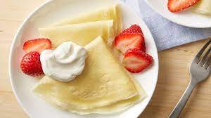

Crepes

Crêpes are very thin pancakes.
They can be served with a wide variety of sweet and savory fillings and toppings.
The breakfast staple dates back to at least 13th-century France.
Here are some ingredients required to make some basic, yet delicious crepes:-
- Flour: These basic French crêpes start with a cup of all-purpose flour.
- Eggs: Eggs act as a binder, which means they help hold the batter together.
- Milk: Milk adds moisture and keeps the crêpes tender.
- Water: Water helps thin the batter
- Salt: A pinch of salt enhances the overall flavor.
- Butter: Butter lends richness and moisture to the crêpes.
Here's how you make some delicious crepes:-
- Whisk the flour and eggs.
- Gradually add the milk and water.
- Scoop the batter onto a hot griddle.
- Cook until lightly browned on the bottom.
- Flip and continue cooking until done on both sides.